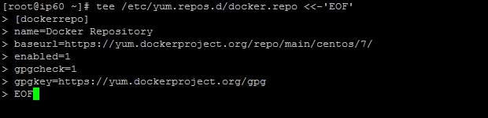
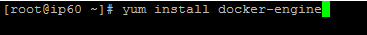
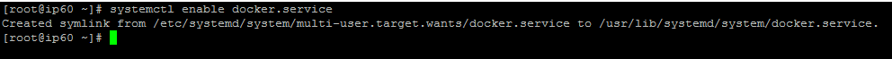
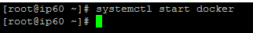
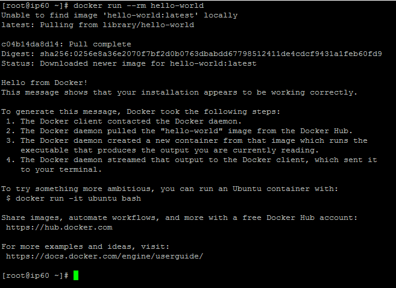

Para la instalación de docker en el sistema operativo Centos 7 Minimal se debe tener en cuenta los siguientes requerimientos:
Para verificar la versión del kernel de tu sistema ejecutamos el comando
$ uname -r
Ahora se procede a realizar la instalación de dockers:
1. Nos aseguramos que estamos trabajando como súper usuario y actualizamos el sistema.
$ sudo su
# apt-get update
2. Añadimos un nuevo repositorio docker al gestor de paquetes YUM por medio del comando tee en la ruta “/etc/yum.repos.d/docker.repo”.
# tee /etc/yum.repos.d/docker.repo <<-‘EOF’

Nota:dentro del archivo “docker.repo” ingresamos la siguiente información: [dockerrepo] [name=Docker Repository] [baseurl=https://yum.dockerproject.org/repo/main/centos/7/] [enabled=1] [gpgcheck=1] [gpgkey=https://yum.dockerproject.org/gpg] [EOF]
Nota:dentro del archivo “docker.repo” ingresamos la siguiente información:
3. Instalamos Docker mediante el comando # yum install docker-engine.

4. Habilitamos el servicio Docker para que arranque automáticamente con el inicio del sistema mediante el comando # systemctl enable docker.service.

5. Iniciamos el demonio de Docker por medio del comando # systemctl start docker.

6. Verificamos si Docker fue instalado correctamente corriendo una imagen de prueba en un contenedor usando el comando .
# docker run –rm hello-world
